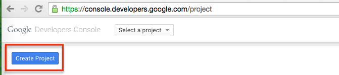
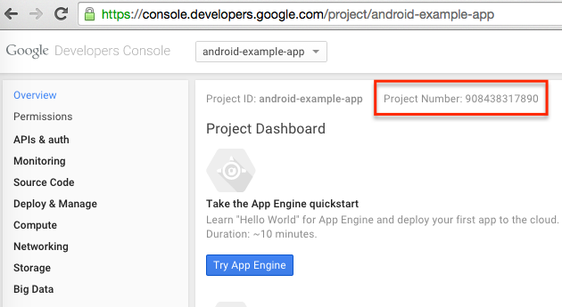
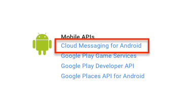
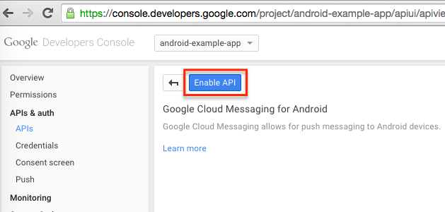
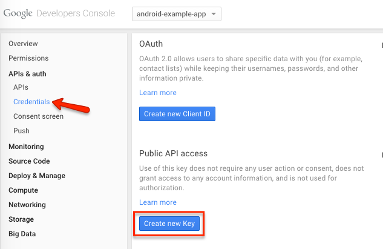
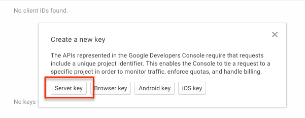
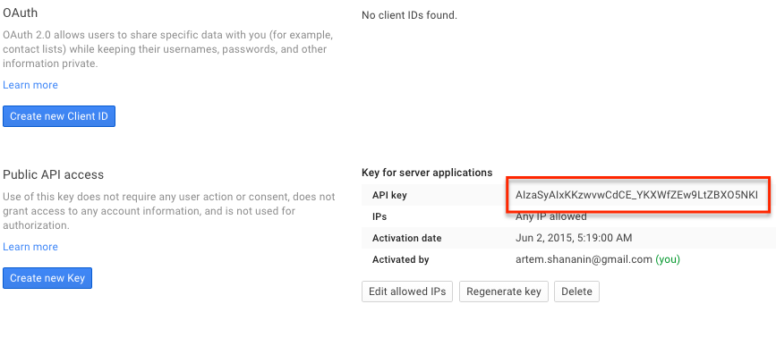
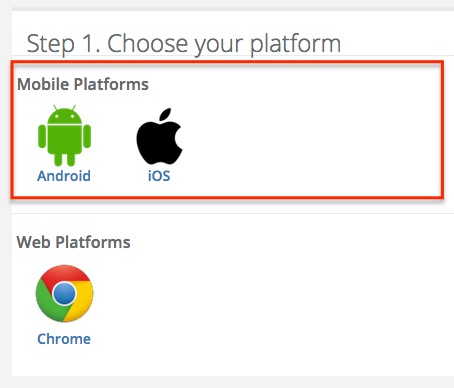
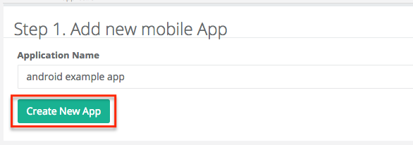
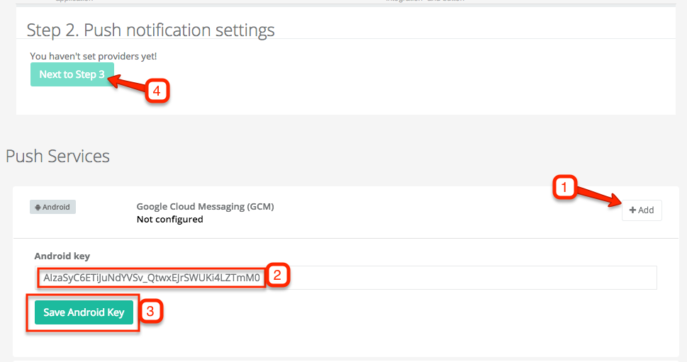

Android - Generating a GCM Push Notification Key
Connect your Google Cloud Messenger Android app with Jeapie
STEP 1: Create a Google Project and save the "Project Number"
1.1 Create a project at https://console.developers.google.com/project for your app.

1.2 Select your Project and click on "Overview". Your project number should be located on this page.

Copy the "Project Number" from this page.
You will need to add it to the source code of your app later when you follow the SDK guide.
STEP 2: Turn on "Google Cloud Messaging for Android" API
2. Under APIs & auth>APIs, search for "Google Cloud Messaging for Android". Turn it on.
 
STEP 3: Create and save Server Key
3.1 Under "APIs & auth" > "Credentials", click "Create new key".
3.2 Select "Server key"
 
3.3 Press the "Create" button.
IMPORTANT
DO NOT enter anything into the box.

3.4 Copy the "API Key". You will need it to configure your project using Jeapie

STEP 4: Configure your Android App using Jeapie
4.1 Log into Jeapie. In the dashboard, select "Application Settings" and then press the "Configure" button to the right of "Google Play (GCM)".
 
4.2 Paste your Google API Key into "Android key" field and press Save.

Configuration for sending Android push notifications is complete!
Next step is setting up the Android SDK